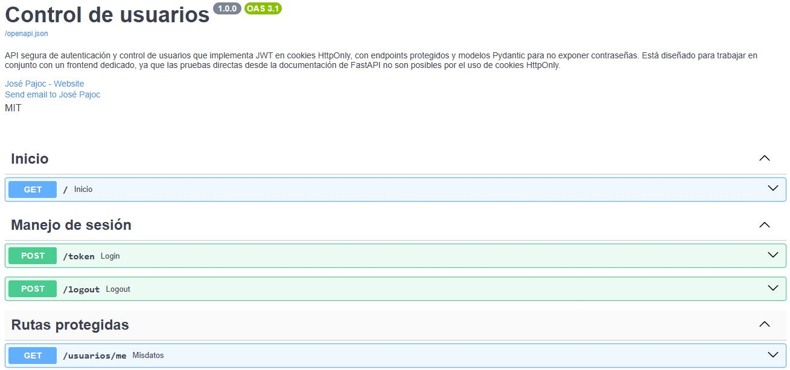
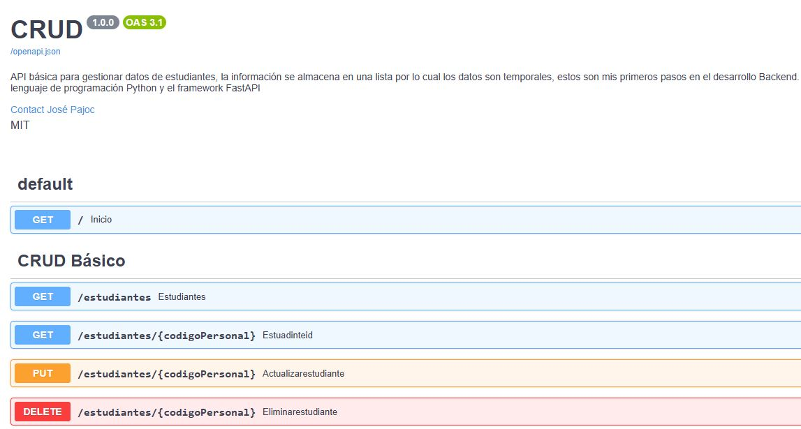
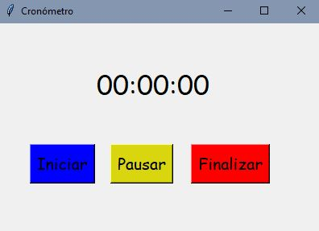
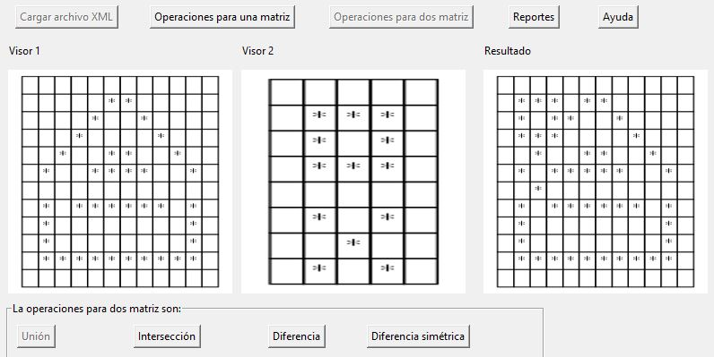
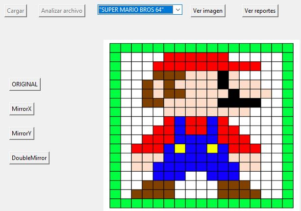

Backend desarrollado con FastAPI, el cual implementa tokens JWT y cookies HttpOnly para sesiones seguras. Incluye endpoints para login, logout y rutas protegidas.
Documentación
API básico para gestionar datos de estudiantes, la información se almacena en una lista por lo cual los datos son temporales, estos son mis primeros pasos en el desarrollo Backend. Esto se logró con el lenguaje de programación Python y el Framework FastAPI.

Proyecto de escritorio realizado con la librería Tkinter con el cual se crea un cronómetro digital mediante programación orientada a objetos, gestión de eventos y actualización en tiempo real con el método after().

Este proyecto fue creado con Programación Orientada a Objetos (POO) y los módulos Graphviz y Pillow, sirve para trabajar con imágenes que se hacen desde archivos XML que sube el usuario, luego se puede crear un reporte HTML con un registro de todas las operaciones aplicadas a las imágenes. En el repositorio se encuentra toda la información del proyecto y archivos de prueba. Para usarlo, se debe instalar Graphviz y Pillow primero.
Proyecto del curso IPC2 de Ingeniería en Sistemas - USAC

El proyecto permite cargar archivos de texto plano con la extensión “pxla” el cual posee información como título de la imagen, dimensiones y color para cada celda, el programa se encarga de leer la información y transformarla a una imagen la cual pueda aplicar filtros en los ejes “X” y “Y”, la información del archivo y la lectura del mismo es desplegado en un reporte HTML. En el repositorio se encuentra toda la información del proyecto y archivos de prueba. Para usarlo, se debe instalar Graphviz y Pillow primero.
Proyecto del curso LFP de Ingeniería en Sistemas - USAC